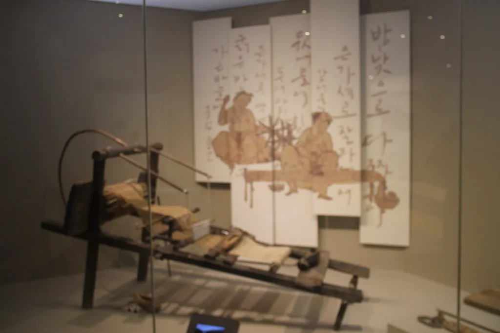
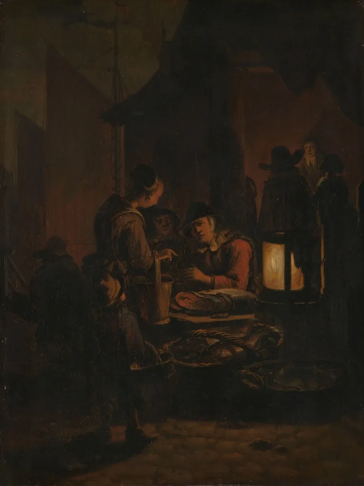
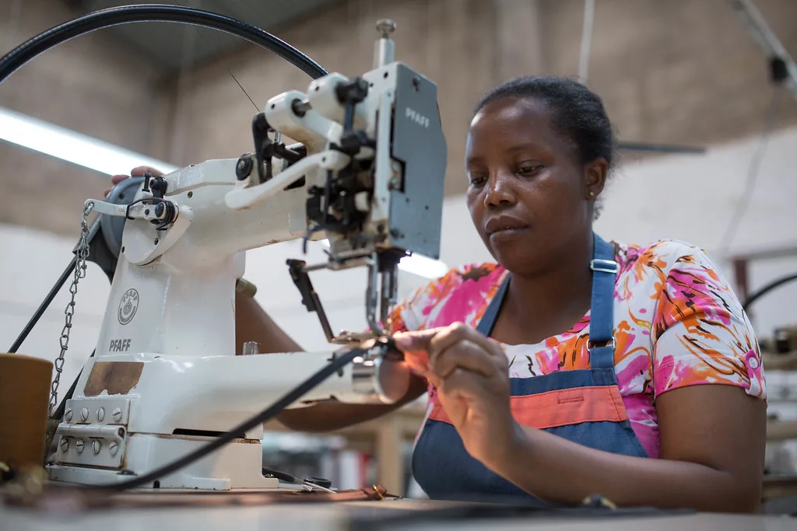
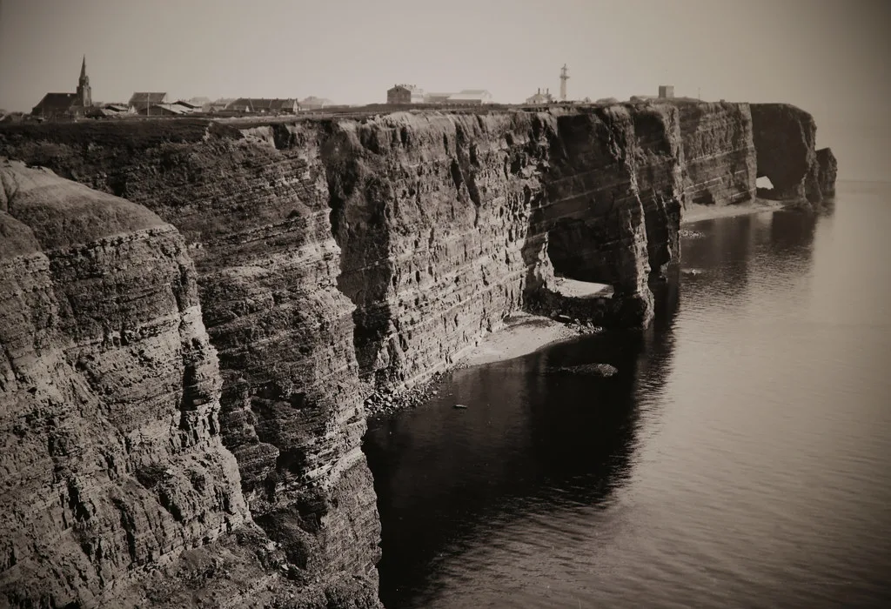
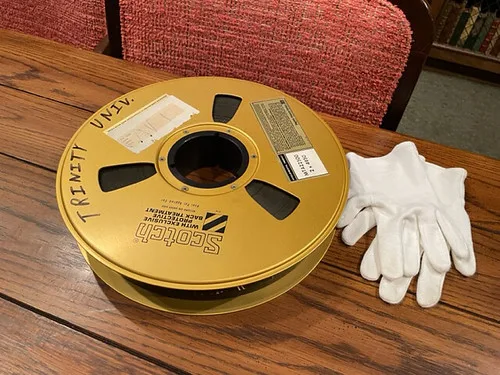

마지막 방직공 다큐 · 74분 · 2024 문 닫는 방직공장에서 3년을 찍었습니다. ↗ 링크
새벽 네 시의 시장 다큐 · 22분 · 2025 도매시장 상인 다섯 명의 하루.
손의 기록 브랜드 필름 · 6분 · 2025 가죽 공방의 손동작만으로 구성했습니다.
섬으로 가는 배 다큐 · 48분 · 2023 하루 두 번 다니는 배와 승객들.
버린 40시간 에세이 · 14분 · 2026 편집에서 잘라낸 장면들로 만든 짧은 영상.촬영 12일 · 다섯 대 동시 촬영.
어려웠던 것: 조명을 쓸 수 없어 ISO를 12800까지 올렸습니다. 노이즈를 살리는 쪽으로 방향을 바꿨습니다.
배운 것: 제약이 톤을 정해 주기도 합니다.
얼굴 없이 손만 나옵니다.
어려웠던 것: 대사가 없어 리듬을 소리로만 만들어야 했습니다. 편집을 열한 번 갈아엎었습니다.
배운 것: 소리가 편집의 뼈대였습니다.
촬영 8개월 · 22회 승선.
어려웠던 것: 배 위 흔들림 때문에 짐벌이 무용지물이었습니다. 결국 고정 삼각대와 롱테이크로 갔습니다.
배운 것: 안 되는 장비를 붙잡기보다 방식을 바꾸는 게 빨랐습니다.
본편에 못 들어간 장면만 모았습니다.
어려웠던 것: 버릴 이유가 있어 버린 장면들이라 맥락 없이는 지루했습니다. 내레이션을 붙여 살렸습니다.
배운 것: 버린 것에도 순서가 있으면 이야기가 됩니다.
좋은 카메라가 좋은 장면을 만들지는 않았습니다. 같은 자리에 몇 번 더 가는 쪽이 늘 이겼습니다.
첫 촬영은 카메라를 꺼내지 않습니다. 두 번째도 대개 그렇습니다. 인물이 카메라를 잊을 때까지 기다리는 시간이 편집실에서 가장 크게 돌아옵니다.
다만 소리는 타협하지 않습니다. 그림은 나중에 살릴 수 있어도 소리는 못 살립니다.
결혼식 영상으로 시작했습니다. 다큐를 찍고 싶어서 돈이 되는 일을 먼저 했습니다.
「마지막 방직공」 촬영을 시작했습니다. 이때는 끝날 줄 몰랐습니다.
편집자가 합류했습니다. 혼자 편집하던 때보다 버리는 결정이 빨라졌습니다.
「마지막 방직공」이 다큐멘터리 영화제 세 곳에 걸렸습니다.
다큐로 배운 방식을 브랜드 일에 씁니다. 오래 찍고 많이 버리는 건 똑같습니다.
다큐멘터리, 브랜드 필름, 기록 영상 모두 받습니다.
다만 3주 안에 끝내야 하는 일은 저희와 맞지 않습니다. 먼저 무엇을 남기고 싶은지부터 이야기해요.